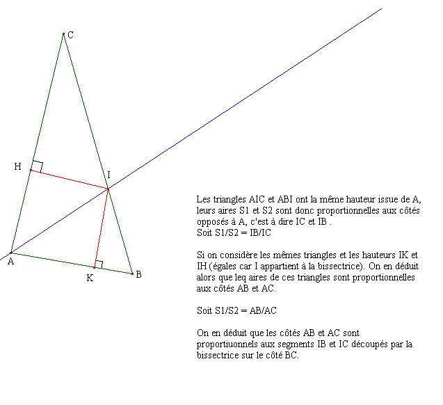

Teorema: En todo triángulo, la bisectriz de un ángulo “interior” divide al lado opuesto en dos segmentos aditivos directamente proporcionales a los lados de dicho ángulo

El profesor Bernard Capponi del Lycée de Seyssinet remite la siguiente solución: